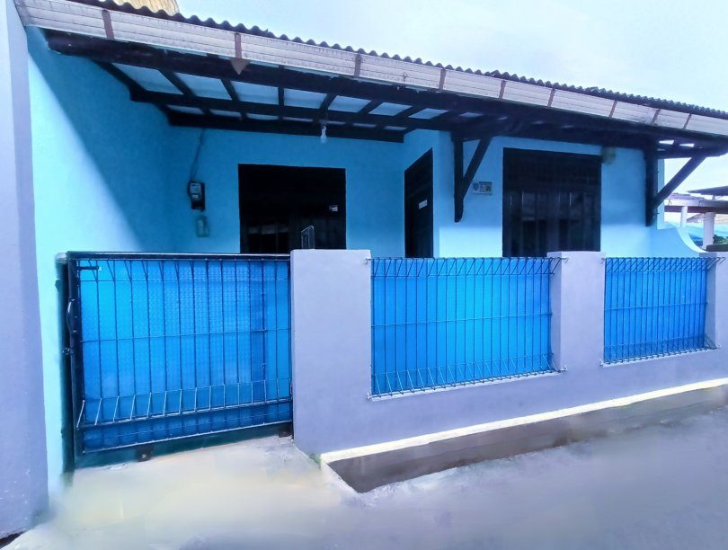

Temukan kontrakan yang tepat, jauh sebelum kamu datang ke lokasi.
Bandingkan kontrakan dan kos di satu tempat — lengkap dengan foto asli, kejujuran kelebihan-kekurangan, dan status unit kosong yang selalu diperbarui pemiliknya.

Dibangun agar kamu tidak salah pilih kontrakan
Setiap detail dirancang supaya keputusan sewa kamu lebih cepat dan lebih tenang.
Transparan sampai ke kekurangannya
Setiap listing wajib mencantumkan kelebihan dan kekurangan properti — bukan cuma sisi baiknya saja.
Pemilik terverifikasi
Setiap akun pemilik ditinjau manual oleh admin sebelum bisa mempublikasikan properti.
Ketersediaan unit real-time
Lihat langsung berapa unit yang masih kosong — hindari survey ke tempat yang ternyata sudah penuh.
Nyaman di mata, siang atau malam
Dark mode yang benar-benar dirancang, bukan sekadar warna dibalik.
Simpan & bandingkan
Tandai favorit dan bandingkan beberapa pilihan sebelum memutuskan.
Daftar Kontrakan & Kos yang Sudah Terdaftar
Kontrakan, kos, dan perumahan yang sudah melalui verifikasi tim Cartok dan siap disewa.
Properti Terbaru
Kontrakan yang baru saja disetujui dan dipublikasikan pemiliknya.
Simpel, Cepat, dan Transparan
Cari Lokasi
Gunakan pencarian dan filter untuk menemukan area yang kamu inginkan.
Lihat Detail
Bandingkan harga, fasilitas, kelebihan, dan kekurangan tiap properti.
Masuk untuk Info Lengkap
Daftar gratis untuk membuka seluruh foto dan kontak pemilik.
Hubungi Pemilik
Tanyakan ketersediaan dan atur jadwal survey lokasi.
Dipercaya Pencari dan Pemilik Kontrakan
"Akhirnya nemu kos yang fotonya sesuai sama aslinya. Sebelum ke lokasi udah tahu fasilitas dan harga pastinya."
"Sebagai pemilik kontrakan, proses daftarnya gampang banget. Admin cepat verifikasi dan langsung ada yang tanya-tanya."
"Fitur bandingin harga dan lihat unit kosong beneran ngebantu, jadi nggak buang waktu survey ke tempat yang udah penuh."